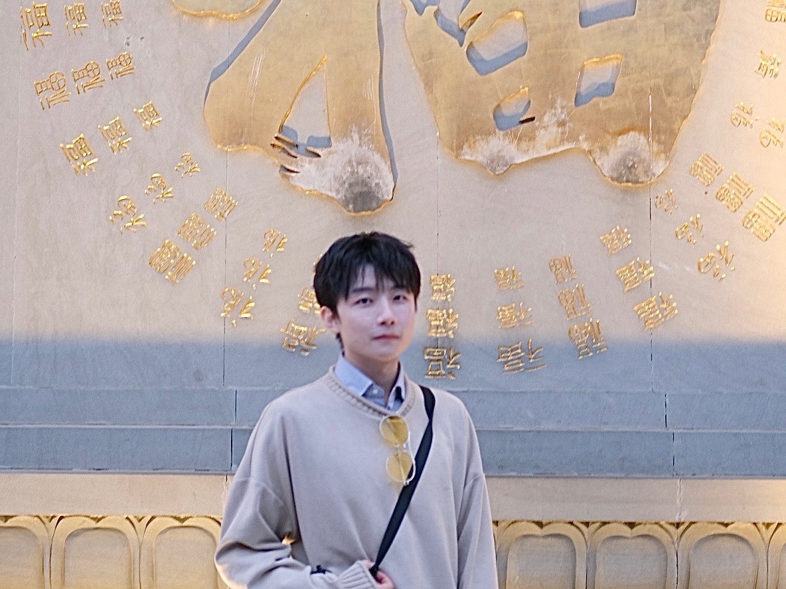
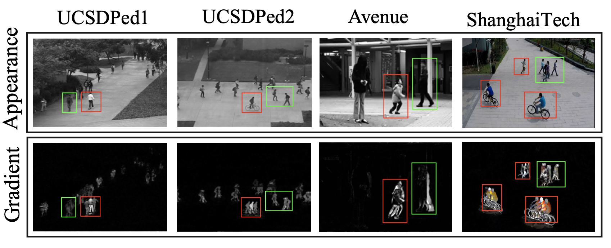

|
Shoubin Yu
I am now a senior student at School of Cyber Security, Shanghai Jiao Tong University (SJTU). I used to major in Architechture Design for one year and change my major.
I previous have my remote research at Columbia University and MIT-IBM Watson AI Lab. I also have a nice internship time at SenseTime.
I am interested in a broad range of topics of computer vision, especially in cross-modality tasks. Besides researches, i enjoy traveling and graphic design in my leisure time.
email |
Github |
resume/CV
|

|
Neuro-Symbolic Video Reasoning
|

|
STAR: A Benchmark for Situated Reasoning in Real-World Videos
Bo Wu,
Shoubin Yu,
Zhenfang Chen,
Joshua B. Tenenbaum,
Chuang Gan
NeurIPS 2021 Track Datasets and Benchmark, 2021 (under review)
[openreview]
[project homepage]
|
Video Abnormal Events Detection
|
|

|
Adversarial Video Anomaly Detection via Gradient-Embedded Substitute
Shoubin Yu,
Bo Wu,
Ke Xu,
Tanfeng Sun,
Wu Liu,
Jian Zhao
IEEE Transactions on Circuits and Systems for Video Technology(TCSVT), 2021 (under review)
|
|
Internship & Experience
|
- Remote research, MIT-IBM Watson AI Lab, 2021
- Internship, Urban Computing Group, SenseTime, 2021
- Summer research, DVMM, Columbia University, 2020
|
|
Awards & Patents
|
- Meritorious Award in Mathematical Contest in Modeling, 2019
- Second Prize in Shanghai, China Undergraduate Mathematical Contest in Modeling, 2019
- Analysis Method of Bird Category Based on Yolov3 and GoogLeNet Network Model, CN Patent Application 201911165623.3, 2019
|
|